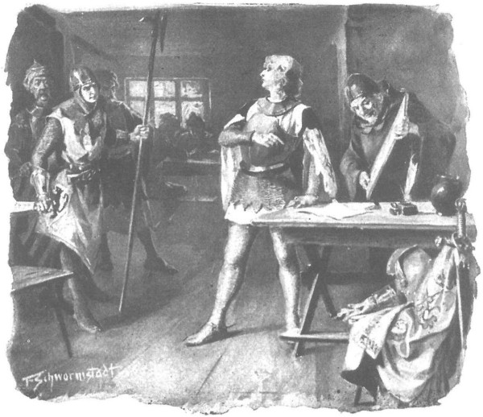

Trong khi đó, thật ra “chàng Zbyszko ngu ngốc” rời xa Bogdaniec mà trái tim nặng trĩu. Trước tiên, chàng thấy bơ vơ và lạ lẫm khi ra đi một mình không có ông chú ở bên, người mà từ những năm xưa đến nay chưa khi nào chàng rời xa, người mà chàng vốn quen thuộc đến nỗi bây giờ chàng cũng không hiểu không có ông thì mình sẽ xoay xở ra sao trong những chuyến lữ hành và trong chiến trận mai này. Hai nữa, chàng thương tiếc Jagienka, bởi mặc dù tự nhủ lòng là đi đến với Danusia mà chàng yêu thương với tất cả tâm hồn, nhưng ở bên Jagienka, chàng sung sướng và hạnh phúc quá, đến bây giờ mới cảm thấy rằng bên cô là cả niềm vui, còn xa cô là mênh mông nỗi buồn. Đến nỗi chàng cũng thấy ngạc nhiên trước nỗi nhớ thương của chính mình, thậm chí đâm lo lắng, bởi giá như chàng nhớ đến Jagienka như anh trai nhớ người em gái thì đâu có chuyện gì! Đằng này, chàng lại những mơ đến việc ôm hai bên hông cô gái mà đặt lên lưng ngựa hay đỡ xuống, mơ thấy được bế cô qua suối, được vắt cho tóc cô bớt ướt, được đi lang thang trong rừng với cô, được ngắm nhìn cô để lòng sung sướng. Chàng đã quá quen với những điều ấy, những điều đã trở thành quá dễ chịu với chàng, đến mức lúc này đây khi nhớ đến, chàng hoàn toàn quên bẵng mất là mình đang đi trên con đường thiên lý dài dằng đặc đến Mazury, mà trong mắt chàng chỉ hiển hiện cảnh tượng Jagienka đến cứu chàng trong rừng, khi đang quần nhau với con gấu. Ngỡ chuyện ấy mới vừa xảy ra hôm qua, cũng như chỉ vừa mới hôm qua chàng cùng cô gái đến hồ Odstajane săn hải ly. Tuy không hề thấy cảnh cô gái nhảy xuống nước bơi ra để bắt con hải ly bị trúng tên, nhưng chàng ngỡ như đã chính mắt trông thấy, và trong chàng xuân tình lại trào dâng hệt như vài tuần trước đây, khi làn gió ỡm ờ đã cố tình đùa cợt với chiếc váy của Jagienka.
Rồi lát sau, chàng chợt nhớ lại cảnh cô gái đến nhà thờ Krześnia với trang phục tuyệt mỹ thế nào, và mình đã kinh ngạc ra sao khi thấy một cô gái giản dị là thế chợt trở thành một tiểu thư dài các trang nhã, dòng dõi lá ngọc cành vàng. Tất cả những kỷ niệm ấy khiến cho trái tim chàng chợt có gì mơn trớn, một thứ gì vừa âu yếm vừa buồn buồn, lại vừa làm dậy lên niềm khao khát, và khi chàng chợt nghĩ rằng mình đã có thể làm bất cứ điều gì mình muốn với cô, rằng cô cũng khao khát đến với chàng biết bao, chàng nhớ những khi Jagienka đắm đuối nhìn vào mắt chàng và nồng nàn áp vào người, thì chàng cố lắm mới có thể ngồi yên trên lưng ngựa. “Nếu như ta đón đường gặp nàng ở đâu đó để giã từ,” chàng thầm nghĩ, “xin được ôm nàng một lần trước lúc lên đường, thì có lẽ nàng sẽ cho phép!” Nhưng ngay lập tức chàng cảm thấy không phải thế, rằng cô sẽ chẳng cho phép đâu, bởi chỉ mới nghĩ đến cảnh từ giã ấy thôi là chàng đã râm ran cả người, dẫu trời vẫn đang tiết chớm lạnh.
Rốt cuộc, kinh hoàng trước những hồi ức quá nghiêng về phía dục vọng ấy, chàng vội rũ bỏ chúng ra khỏi tâm trí như đã rũ bỏ lớp tuyết khô ra khỏi tấm áo choàng.
“Ta đang đi đến với Danusia, đến với người yêu dấu nhất!” Chàng tự nhủ lòng mình.
Và lúc ấy, chàng chợt nhận ra rằng đó là một thứ tình yêu khác hẳn, dường như thành kính hơn và ít xác thịt hơn. Rồi dần dần, khi đôi chân dậm trong bàn đạp tê cóng, khi gió rét buốt như khiến máu chàng đông lại, mọi ý tưởng của chàng bay về phía Danusia Jurandówna. Đó chính là người con gái mà chàng thật sự có nghĩa vụ phải phụng sự. Giá không có nàng, hẳn từ lâu đầu chàng đã phải rơi trên bãi chợ Kraków. Chính nàng đã tuyên bố trước giới hiệp sĩ và thị dân: “Chàng là của em!” Và chính bằng cách ấy, nàng đã cứu chàng thoát khỏi tay đao phủ, để từ bấy trở đi chàng thuộc về nàng như một nô lệ thuộc về bà chủ. Không phải chàng đã chọn nàng, mà chính nàng đã chọn chàng, không một sự cưỡng chống nào của ông Jurand có thể bác bỏ nổi điều đó. Chỉ mỗi mình cô gái mới có thể xua đuổi chàng, như nữ chủ xua đuổi đầy tớ, dẫu nếu có thế thì chàng cũng chẳng đi xa, bởi còn bị ràng buộc bởi lời thề nguyền. Nhưng chàng nghĩ là nàng sẽ chẳng xua đuổi chàng, mà sẽ rời triều đình Mazowsze để theo chàng đến cùng trời cuối đất, và khi nghĩ vậy chàng bèn thầm ca ngợi trong tâm linh cô gái con ông Jurand, và trách móc Jagienka, dường như chỉ do lỗi của cô, chỉ vì sự cám dỗ của cô, mà lòng chàng mới phân thành đôi ngả. Lúc này, chàng không hề nghĩ rằng chính Jagienka đã chữa lành vết thương cho ông Maćko, hơn nữa, nếu không có cô tới cứu chắc hẳn gấu đã xé xác chàng đêm nọ rồi - chàng cố tình lên án Jagienka, nghĩ rằng làm như thế là chàng đã phụng sự Danusia và có thể tự bào chữa trước chính mình.
Đúng lúc đó, gia nhân người Séc là Hlava do Jagienka phái tới vừa đến nơi, dắt theo một con ngựa chở hàng.
- Sáng danh Chúa! - Chàng người Séc vừa thốt lên vừa khom mình thật thấp để chào.
Zbyszko đã một đôi lần thấy chàng ta ở trang Zgorzelice nhưng không nhận ra, nên liền lên tiếng:
- Sáng danh Chúa đời đời. Ngươi là ai?
- Là kẻ tôi tớ của ngài, thưa cậu chủ cao minh.
- Sao lại tôi tớ của ta? Tôi tớ của ta kia kìa. - Chàng vừa nói vừa chỉ hai người Thổ được ông Zawisza mang gia huy Sulima trao tặng, cùng hai người làm công lực lưỡng đang cưỡi trên những con ngựa kéo xe và dắt theo đôi ngựa nòi dành cho hiệp sĩ. - Tôi tớ ta kia, còn ngươi, ai đã phái ngươi tới đây?
- Tiểu thư Jagienka con ông Zych trang Zgorzelice ạ.
- Tiểu thư Jagienka?
Zbyszko vừa mới nổi loạn trong lòng chống lại cô gái, trái tim chàng vẫn đang ngập tràn nỗi ác cảm, nên chàng bèn bảo:
- Ngươi hãy trở lại nhà, cảm ơn tiểu thư đã ban ơn, nhưng ta không cần ngươi.
Nhưng chàng trai Séc lắc đầu.
- Thưa cậu chủ, tôi không về đâu. Tôi đã được người ta tặng cho cậu chủ, hơn nữa tôi đã thề sống chết sẽ phục vụ cậu chủ.
- Nếu người ta tặng ngươi cho ta, vậy thì ngươi là đầy tớ của ta, phải không?
- Là tôi tớ của cậu chủ, thưa ngài.
- Vậy ta ra lệnh cho ngươi phải trở lại nhà.
- Tôi đã thề rồi mà, và dẫu tôi có là tù binh bị bắt ở thành Boleslawiec, một kẻ tôi tớ nghèo hèn, nhưng vẫn là một trang chủ.
Zbyszko nổi giận:
- Cút xéo ngay! Sao? Ngươi định phục vụ ta ngược với ý muốn của ta hở? Cút ngay, nếu không ta sẽ ra lệnh cho gia nhân giương nỏ lên bây giờ.
Nhưng chàng người Séc vẫn thản nhiên tháo chiếc áo choàng bằng dạ lót da chó sói dưới gấu, trao cho Zbyszko và bảo:
- Tiểu thư Jagienka còn gửi cho ngài thứ này nữa, thưa ngài.
- Ngươi muốn ta nện gãy xương hả? - Zbyszko vừa hỏi vừa giật chiếc gậy từ tay một người gia nhân.
- Còn có cả túi tiền nhỏ này để ngài sử dụng. - Chàng trai người Séc lại nói.
Zbyszko vung chiếc gậy lên, nhưng chàng chợt nhớ ra rằng mặc dù là tù binh, nhưng người gia nhân này vốn từng là một trang chủ, anh ta chịu ở lại nhà ông Zych có lẽ chỉ vì chưa có tiền để chuộc mình, vì vậy chàng lại hạ gậy xuống.
Chàng trai Séc cúi gập người đến sát chiếc bàn đạp của Zbyszko và thốt lên:
- Thưa ngài, xin chớ giận. Nếu ngài không cho phép tôi đi cùng, thì tôi cũng phải đi theo ngài một đôi dặm đường, bởi tôi đã thề trên sự cứu rỗi linh hồn là tôi sẽ đi.
- Thế nếu ta ra lệnh giết hay trói ngươi lại thì sao?
- Nếu ngài ra lệnh giết tôi, thì đó không phải là tội lỗi của tôi, còn nếu ngài ra lệnh trói, tôi sẽ nằm lại đây cho đến khi những người tốt tới cởi trói cho tôi hoặc lũ chó sói tới ăn thịt tôi.
Zbyszko không nói nữa, chỉ thúc ngựa phóng đi, theo sau là đám tùy tùng của chàng. Chàng trai người Séc với cánh nỏ trên vai và chiếc rìu trong tay phi ngựa theo phía sau, ủ kín người trong tấm da bò tót lông lá, bởi một cơn gió lạnh giá bắt đầu nổi lên, mang theo những vụn tuyết.
Cơn bão tuyết mỗi lúc một mạnh thêm. Mặc dù đã mặc áo lông, hai gia nhân người Thổ vẫn lạnh cóng, những gia nhân khác của Zbyszko cũng phải vung chân múa tay cho khỏi rét, còn bản thân chàng, do mặc không đủ ấm, cũng bắt đầu đưa mắt liếc về chiếc áo choàng da sói mà Hlava mang tới, và lát sau chàng đành phải bảo một tùy tùng người Thổ đưa nó cho chàng.
Quấn mình thật kín trong tấm áo, chẳng mấy chốc chàng đã thấy hơi ấm lan tỏa toàn thân. Đặc biệt, chiếc mũ áo choàng hết sức tiện lợi, nó che cho mắt và phần lớn mặt chàng, khiến gió lốc gần như không còn hành hạ chàng nữa. Khi ấy, bất giác chàng thầm nghĩ rằng dẫu sao Jagienka cũng quả là một thiếu nữ tốt bụng. Chàng bèn kìm bớt ngựa lại, bởi chợt muốn hỏi chàng trai Séc về cô gái và mọi chuyện đã xảy ra ở trang Zgorzelice.
Chàng bèn gật đầu với chàng trai Séc và hỏi:
- Thế ông Zych có biết tiểu thư gửi ngươi đến cho ta không?
- Ông chủ có biết ạ. - Hlava đáp.
- Thế ông không giữ lại sao?
- Có giữ ạ.
- Ngươi hãy kể xem chuyện thế nào?
- Đức ông đi khắp nhà, còn tiểu thư bám theo sau. Ông quát mắng, tiểu thư không nói một lời, chỉ đợi khi ông quay lại là tiểu thư quỳ xuống ôm gối ông. Vẫn không thốt ra một lời nào cả. Mãi sau ông chủ bảo: “Mày câm à, mà không nói lấy một tiếng? Nói đi, bởi rốt cuộc tao sẽ cho phép, mà hễ tao cho phép, thì cha tu viện trưởng vặn đầu tao chứ chẳng không?” Đến lúc ấy tiểu thư mới hiểu rằng ông chủ đã thuận theo ý mình, tiểu thư bèn vừa khóc vừa cảm ơn. Ông chủ mắng tiểu thư là vượt quyền ông, chuyện gì ông cũng phải chiều theo ý tiểu thư, cuối cùng ông bảo: “Mày hãy hứa là sẽ không lén trốn đi chia tay với nó thì tao mới cho phép, nếu không thì thôi.” Tiểu thư buồn quá, nhưng cũng hứa. Ông chủ mừng lắm, bởi cả ông lẫn cha tu viện trưởng chỉ sợ tiểu thư muốn trốn đi gặp ngài mà thôi… A, nhưng đến thế chưa xong đâu, bởi sau tiểu thư lại muốn tôi đem theo hai con ngựa nữa, đức ông không cho, tiểu thư muốn gửi chiếc áo khoác lông sói và túi tiền, ông cũng không cho. Nhưng mệnh lệnh của ông thì cô coi ra gì! Nếu tiểu thư có phẫn chí muốn đốt cả nhà đi nữa thì ông cũng thuận thôi. Vì vậy mà có con ngựa, có chiếc áo lông sói và túi tiền đây…
“Thật là một cô gái tận tụy hết lòng!” Zbyszko nghĩ thầm trong dạ. Lát sau, chàng hỏi to thành tiếng.
- Thế với cha tu viện trưởng thì có cực lắm không?…
Chàng trai người Séc mỉm cười như một gã gia nhân tinh khôn, thấu hiểu mọi chuyện xảy ra chung quanh, rồi đáp:
- Hai cha con ông chủ giấu cha tu viện trưởng chuyện này, tôi không rõ về sau thế nào nếu cha hay chuyện, bởi lẽ tôi ra đi trước. Cha thì bao giờ chẳng thế, đôi khi quát mắng tiểu thư, nhưng rồi sau lại đưa mắt nhìn theo và nghĩ xem ngài có xúc phạm đến tiểu thư không. Chính mắt tôi trông thấy, có lần ngài rầy la tiểu thư, rồi sau đó đích thân đi mở rương, mang ra một sợi đây chuyền tuyệt vời, dẫu có tới kinh đô Kraków cũng không tìm ra được, đưa cho tiểu thư và bảo: “Thôi nào, con!” Với cha tu viện trưởng, tiểu thư cũng sẽ thu xếp được thôi, bởi ngài yêu tiểu thư hơn cả cha đẻ cô nữa kia.
- Hẳn là thế rồi.
- Như Đức Chúa ngự trên thiên giới vậy.
Nói đến đây, cả hai cùng im lặng phi ngựa đi hồi lâu giữa gió trời thét gào và những bông tuyết rơi lả tả. Đột nhiên Zbyszko ghìm ngựa lại, vì ở bên bìa rừng chợt vang lên một tiếng kêu não nùng thảm đạm, bị chìm đi trong tiếng cây rừng ầm ào:
- Hỡi các tín đồ Ki-tô, hãy cứu một bầy tôi của Chúa đang lâm nạn!
Cùng lúc đó, một người ăn mặc nửa thầy tu nửa dân thường lao ra đường, dừng ngay trước mặt Zbyszko và kêu lớn:
- Dẫu ngài là ai, xin hãy giúp đỡ người anh em đồng loại đang gặp cảnh khốn nguy!
- Có chuyện gì thế, mà ngươi là ai? - Chàng hiệp sĩ trẻ hỏi.
- Tôi phụng sự Chúa, dẫu chưa được ban ơn thánh! Còn tai họa là sáng nay, con ngựa chở hòm đồ thánh giật cương trốn mất, để tôi lại một mình không tấc sắt trong tay, mà đêm tối sắp đến rồi, lũ thú dữ sắp sửa lên tiếng trong rừng rậm. Tôi sẽ chết mất xác nếu các ngài không cứu cho.
- Nếu ngươi chết mà ta không cứu, thì ta sẽ phải gánh chịu những tội lỗi của ngươi, - Zbyszko nói, - nhưng ta làm sao tin được ngươi nói có đúng không, hay ngươi lại chỉ là một tên du đãng hoặc phường thảo khấu hoành hành trên những nẻo đường quan?
- Nhìn hòm xiểng tôi đây thì biết chứ, thưa ngài. Không ít kẻ sẵn sàng đánh đổi cả túi tiền đựng đầy căng những đồng dukat để có được những gì chứa đựng trong hòm này, nhưng tôi sẽ chia sẻ chúng với ngài không lấy một đồng, chỉ cần ngài cứu tôi theo và mang giùm những chiếc rương đây nữa.
- Ngươi bảo ngươi là bầy tôi phụng thờ Chúa, há lại không biết rằng cứu người không phải để được nhận những phần thưởng phàm trần, mà chỉ vì ơn thiên giới sao? Mà sao ngươi có thể giữ lại rương hòm, nếu con ngựa chở đồ đã rứt cương chạy mất?
- Bởi lẽ trước khi tôi tìm được ngựa thì nó đã bị lũ sói trong rừng xé xác ngoài trảng trống mất rồi, chỉ đôi hòm này còn lại, tôi phải lôi mãi mới ra được đến đường để trông đợi tình thương hại và sự cứu rỗi ở những con người nhân hậu.
Nói đoạn, để chứng minh mình nói thật, gã chỉ hai chiếc hòm bện bằng vỏ cây đặt dưới gốc thông. Zbyszko nhìn chúng hơi nghi ngại, bởi người này chàng thấy có vẻ không lương thiện, hơn nữa tuy giọng nói của gã khá trơn tru song vẫn để lộ âm sắc của một kẻ lạc loài từ phương xa tới. Nhưng chàng không muốn từ chối giúp đỡ gã, nên chàng cho phép gã được xếp cả đôi hòm nhẹ một cách lạ lùng ấy lên lưng con ngựa đi không mà chàng trai người Séc vẫn dắt theo.
- Cầu Chúa ban cho ngài nhiều chiến công, hỡi hiệp sĩ can trường! - Người lạ mặt thốt lên.
Rồi sau đó, khi nhìn tỏ khuôn mặt còn quá trẻ trung của Zbyszko, gã thấp giọng nói thêm:
- Và ban thêm ít râu ria cho ngài nữa!
Lát sau, gã đã phi ngựa cạnh chàng trai người Séc. Suốt hồi lâu chẳng ai nói với ai lời nào, vì gió buốt căm căm và tiếng cây rừng ầm ào dữ dội. Lát sau, khi trời hơi lặng bớt, Zbyszko chợt nghe sau lưng câu chuyên sau đây:
- Tôi không cãi chuyện ông đã từng tới Roma, nhưng trông ông cứ như một gã nghiện bia ấy. - Chàng Séc bảo.
- Coi chừng kẻo lại bị nguyền rủa đời đời đấy, - người lạ mặt nói, - bởi lẽ ngươi đang được nói chuyện với một con người mà lễ phục sinh vừa rồi mới được ăn trứng luộc cùng Đức Cha thiêng liêng đấy… Vả, trời lạnh thế này, nói chuyện bia bọt làm gì, trừ phi bia đun nóng thì không kể. Này, mà nếu nhà ngươi có mang theo một bầu rượu bên mình để dùng khi đi đường thì hãy cho ta hai, ba ngụm, ta sẽ giảm cho ngươi một tháng trong luyện ngục. [157]
- Chính ông đã bảo ông chưa được ban chức thánh, vậy ông giảm cho tôi một tháng ngục luyện sao được?
- Chức thánh ta chưa có, nhưng đầu ta dẫu sao cũng được cạo sạch rồi, nên ta được phép làm việc đó, hơn nữa ta còn mang theo cả những vật chuộc tội lẫn các thánh tích đây này.
- Trong mấy cái hòm vỏ cây kia à? - Chàng Séc hỏi.
- Trong mấy cái hòm ấy! Nếu được thấy những gì ta có, hẳn các ngươi sẽ quỳ úp mặt xuống đất cả lượt, và không riêng gì các ngươi đâu, tất tần tật những cây thông kia lẫn muông thú trong rừng đều làm thế cả.
Nhưng vốn là một gia nhân tinh khôn và giàu kinh nghiệm, chàng trai Séc bèn nhìn gã thầy tu dở đang đòi bán phép chuộc tội kia, vẻ đầy ngờ vực rồi bảo:
- Lũ sói ăn thịt ngựa mất rồi à?
- Ăn rồi, bởi chúng có họ với quỷ sứ, nhưng chúng đã bị vỡ bụng ra rồi. Chính mắt ta đã trông thấy một con bị nứt toang bụng. Nếu ngươi có rượu vang thì đưa đây ta, mặc dù gió hơi lặng nhưng ta bị cóng cả người khi phải ngồi chờ bên đường lúc nãy.
Nhưng chàng trai Séc chẳng đưa rượu, cả hai lại im lặng đi tiếp, cho đến lúc chính gã buôn thánh tích phải lên tiếng trước:
- Các ngươi đi đến đâu vậy?
- Còn xa. Mà bây giờ hẵng đến Sieradz đã. Ông đi với chúng tôi chứ?
- Đành thế thôi. Ta sẽ ngủ tạm qua đêm trong tàu ngựa, ngày mai có thể ngài hiệp sĩ thánh thiện kia sẽ tặng cho ta con ngựa cũng nên, khi ấy ta lại lên đường đi tiếp.
- Ông người ở đâu?
- Dưới quyền các ông chủ Phổ, ở gần Malborg.
Nghe thấy thế, Zbyszko quay đầu lại ra hiệu cho kẻ lạ mặt đến gần chàng.
- Ngươi ở gần thành Malborg à? - Chàng hỏi. - Ngươi vừa rời nơi đó phải không?
- Thưa vâng, ở gần thành Malborg ạ.
- Nhưng có lẽ ngươi không phải dân Đức, bởi ngươi nói tiếng nói của chúng ta thạo lắm. Tên ngươi là gì?
- Dạ thưa tôi là người Đức, người ta gọi tôi là Sanderus. Tôi nói được tiếng nói các ngài bởi tôi sinh tại thành Toruń, nơi dân chúng ai cũng nói thứ tiếng đó. Về sau tôi sinh sống ở thành Malborg, nhưng cả ở đó nữa cũng thế! Mà ngay cả các vị hiệp sĩ của Giáo đoàn cũng hiểu được tiếng nói các ngài.
- Ngươi rời thành Malborg lâu chưa?
- Thưa ngài, tôi đã từng đến Đất Thánh, sau đó đến Roma và thành Constantinople, từ đó tôi vượt qua đất Pháp trở về Malborg, còn từ Malborg tôi chở các thánh tích đến Mazowsze, những thứ mà các tín đồ Ki-tô mộ đạo rất sẵn lòng mua để cứu rỗi linh hồn.
- Ngươi đã đến Plock hoặc Warszawa bao giờ chưa?
- Tôi đã đến cả hai nơi, thưa ngài. Cầu Chúa ban sức khỏe cho cả hai vị quận chúa! Đâu phải bỗng dưng mà các hiệp sĩ Phổ cũng yêu mến quận chúa Aleksandra, đó là một đức bà mộ đạo, tuy quận chúa Anna Januszowa cũng không kém phần nào.
- Ngươi có gặp triều thần quận công Warszawa chứ?
- Tôi không gặp triều thần ở Warszawa mà ở Ciechanow, nơi cả hai cung đình đã nhiệt thành tiếp đãi tôi, một bề tôi của Chúa, và đã hào phóng tặng quà cho tôi trước lúc lên đường. Nhưng tôi cũng đã để lại những thánh tích sẽ mang tới cho họ ân phước của Chúa.
Zbyszko định hỏi thăm tin Danusia, nhưng chợt thấy rụt rè và xấu hổ, bởi chàng hiểu rằng như thế cũng có nghĩa như thể thổ lộ tình yêu của mình với một người lạ mặt, một kẻ gốc gác quê mùa, hơn nữa trông lại đáng ngờ và rất có thể là một kẻ chuyên lừa đảo. Vì vậy, sau hồi lâu im lặng, chàng hỏi:
- Ngươi chở những thánh tích gì theo thế?
- Tôi chở theo đây cả những linh vật chuộc lỗi lẫn các loại thánh tích khác nhau. Vật chuộc tội có loại chuộc hoàn toàn cho năm trăm năm, có loại ba trăm năm, có loại hai trăm, cũng có loại rẻ hơn dành cho những kẻ nghèo khó, để họ có thể mua mà rút ngắn bớt thời gian trải qua ngục luyện. Tôi có những vật chuộc tội cho quá khứ lẫn tương lai, và xin ngài chớ nghĩ rằng tôi cất giấu cho riêng mình những món tiền mà người ta mua chúng nhé… Một mẩu bánh mì đen, một ngụm nước - đó là tất cả những gì dành cho tôi, còn trọn mọi thứ kiếm được tôi đều chở đến Roma để quyên góp cho cuộc thập tự chinh mới. Khắp thế gian này đang đầy rẫy những kẻ moi tiền thiên hạ, mọi thứ của chúng đều giả hết: cả linh vật chuộc tội, cả thánh tích, cả kim ấn, cả chứng chỉ, những kẻ mà Đức Cha thiêng liêng đã sáng suốt gửi bố cáo truy lùng, nhưng mà riêng tôi thì cha tu viện trưởng thành Sieradz đã xúc phạm một cách bất công, bởi lẽ các ấn tín của tôi đều là thứ thiệt. Xin ngài hãy nhìn xem thật kỹ ấn tín trên sáp này rồi tự ngài hãy phán xét.
- Thế cha tu viện trưởng Sieradz bảo gì?
- Ôi, thưa ngài! Hình như cha đã lầm tưởng rằng tôi bị nhiễm tà thuyết của Wiklef [158] . Nếu các ngài đến Sieradz, như tên giám mã của ngài vừa nói, thì tốt nhất tôi thấy không nên giáp mặt cha, để tránh khỏi dẫn cha vào tội phỉ báng thánh tích.
- Nghĩa là nói tóm lại, cha coi ngươi là một kẻ lừa đảo và một thằng kẻ cướp.
- Giá như chỉ động đến tôi thôi, thưa ngài, tôi sẽ tha thứ cho cha vì tình đồng loại, vả chăng tôi cũng đã tha thứ sẵn rồi. Nhưng cha tu viện trưởng lại dám phỉ báng những vật thiêng liêng của tôi, điều mà tôi e rằng sẽ khiến cha bị rủa nguyền vô phương cứu chữa.
- Ngươi có những thứ hàng thiêng liêng gì đó?
- Thưa, đó là những thứ mà không tiện nghe đến khi đang đội mũ trên đầu. Nhưng bây giờ sẵn có các vật chuộc tội đây, tôi xin cho các ngài được phép miễn cất mũ, vì gió lại đang nổi lên kia rồi. Vậy thì các ngài có thể mua những vật chuộc tội ấy mà không bị coi là phạm lỗi. Gì mà tôi chẳng có kia chứ? Tôi có chiếc móng của con lừa mà Chúa dùng để cưỡi khi chạy sang xứ Ai Cập, mà sau đó người ta đã tìm được gần các kim tự tháp. Vua Aragonia [159] đã trả tôi năm mươi đồng dukat bằng vàng ròng để mua nó. Tôi có chiếc lông cánh bị rơi của tổng lãnh thiên sứ Gabriel trong lúc truyền tin, hai cái đầu chim cút do Chúa gửi xuống cho người Israel trên sa mạc, món dầu sôi mà bọn ngoại giáo dùng để bỏ Thánh Jan vào, các nấc của chiếc thang mà Jakub đã từng mơ thấy, những giọt nước mắt của Thánh nữ Maria xứ Ai Cập, một chút gỉ sét từ những chiếc chìa khóa của Thánh Piotr… Không tài nào kể hết mọi thứ được, bởi tôi đang rét cóng cả người, mà tên giám mã của ngài lại không muốn chia sẻ với tôi một ngụm rượu vang, vả có kể đến tối cũng chẳng thể được hết.
- Đó quả là những thánh tích vĩ đại, nếu như chúng dũng là của thật! - Zbyszko nói.
- Nếu như đúng là của thật? Xin ngài hãy giật ngay chiếc giáo trong tay kẻ nô bộc kia và chĩa ngọn ra đi, bởi quỷ sứ đang lượn quanh kẻ nào lỡ sa vào ý nghĩ đó. Xin ngài hãy giữ cho chúng ở cách xa mình một tầm giáo. Còn nếu như ngài không muốn mang vạ vào thân thì hãy mua của tôi một vật chuộc tội cho lỗi kia, nếu không chỉ trong ba tuần, người mà ngài yêu mến nhất trên đời sẽ phải chết.
Zbyszko đâm kinh sợ lời đe dọa, bởi chàng thốt nghĩ đến Danusia; chàng bèn đáp:
- Không phải ta không tin, mà chính ngài tu viện trưởng dòng Dominikan ở Sieradz đấy.
- Xin ngài hãy trông lớp sáp trên ấn tín đây này. Còn về cha tu viện trưởng thì họa có Chúa mới hay ông ấy có còn sống hay chăng, bởi lẽ công lý của Chúa thường thực thi chóng lắm.
Nhưng khi họ đến thành Sieradz, hóa ra cha tu viện trưởng vẫn còn sống. Thậm chí Zbyszko còn đến gặp cha để hiến tiền cho hai lễ misa, một để cầu nguyện cho ông Maćko, còn một để cầu xin đạt được những ngù lông công mà chàng đang tìm kiếm. Cũng như nhiều cha khác ở Ba Lan hồi ấy, cha tu viện trưởng là dân ngoại quốc, gốc người Cylia [160] , nhưng trải qua bốn mươi năm sống ở thành Sieradz, cha đã học thành thạo tiếng Ba Lan và là kẻ thù không đội trời chung với bọn Thánh chiến. Vì vậy khi được biết dự định của Zbyszko, ông bảo:
- Bọn chúng nó rồi sẽ phải chịu hình phạt lớn hơn của Chúa, nhưng ta không ngăn việc con định làm, trước hết vì con đã thề nguyền, hai nữa vì những tội ác mà bọn chúng gây ra ở Sieradz này đây, thì bàn tay Ba Lan không bao giờ không cuộn thành nắm đấm.
- Bọn chúng đã làm gì vậy, thưa cha? - Zbyszko hỏi, rất sẵn lòng được biết tỏ tường mọi tội ác của bọn Thánh chiến.
Nghe chàng hỏi, cha tu viện trưởng cao tuổi chìa hai bàn tay ra, và trước tiên cha lớn tiếng đọc bài kinh “Yên nghỉ đời đời”, rồi tiếp đó ngồi xuống ghế, mắt nhắm nghiền hồi lâu, dường như muốn nhớ lại những hồi ức thuở xưa, mãi sau cha mới nói:
- Kẻ đưa chúng tới đây là Wincenty xứ Samotula [161] . Hồi ấy ta hai mươi tuổi, mới từ Cylia tới đây cùng với chú ta là cha Petzoldt.
Bọn Thánh chiến tấn công thành vào ban đêm [162] và thiêu trụi thành phố. Chúng ta núp sau bức tường, trông thấy tận mắt cảnh chúng dùng kiếm chém đàn ông, đàn bà, trẻ con trên bãi chợ hoặc ném trẻ sơ sinh vào lửa… Ta trông thấy cả các cha bị giết hại, bởi trong cơn cuồng khấu chúng không tha một ai. Cha tu viện trưởng Mikołaj, vốn người Elbląg, có quen viên lãnh binh Herman [163] đang chỉ huy quân Thánh chiến, nên cha bèn dẫn theo các đồng đạo cao tuổi đến gặp viên hiệp sĩ tàn bạo nọ, quỳ xuống trước mặt gã, cầu nguyện bằng tiếng Đức, xin gã hãy thương cho dòng máu Ki-tô. Gã bảo cha: “Ta không hiểu!” và ra lệnh tiếp tục tàn sát dân lành. Người tu hành cũng bị giết, cả chú Petzoldt của ta cũng thế, còn cha Mikołaj thì bị chúng buộc vào đuôi ngựa lôi đi… Đến sáng thì không còn lấy một ai trong thành sống sót, trừ bọn Thánh chiến và một mình ta, trốn trận chiếc xà treo chuông. Chúa đã trừng phạt chúng vì tội ác ấy ở thành Plowce, nhưng bọn chúng vẫn không thôi rình rập sự sụp đổ của vương quốc Ki-tô giáo này, và chúng sẽ còn rình rập cho đến khi bị bàn tay Chúa diệt sạch mới thôi.
- Chính ở Plowce, gần như toàn bộ đàn ông của dòng họ con đã ngã xuống, song con không tiếc thương họ, một khi Chúa đã ban cho đức vua Loldetek một chiến thắng vĩ đại nhường ấy với hai mươi nghìn quân Đức bị tiêu vong. [164]
- Rồi con sẽ còn được thấy một cuộc chiến lớn hơn và những chiến thắng lẫy lừng hơn. - Cha tu viện trưởng bảo.
- Amen! - Zbyszko nói.
Rồi hai người bàn sang chuyện khác. Chàng hiệp sĩ trẻ hỏi cha về gã buôn thánh tích mà chàng bắt gặp trên đường, mới được cho hay rằng khối kẻ lừa đảo như gã hiện đang hành nghề dọc đường để đánh lừa những người cả tin. Cha tu viện trưởng cũng cho chàng hay rằng nhiều sắc lệnh của Giáo hoàng yêu cầu các giám mục phải lùng bắt bọn buôn thần bán thánh đó, xử tội ngay những kẻ không có tín bài và triện ấn đích thực. Gã buôn thánh tích kia có những chứng chỉ rất đáng ngờ, nên cha đã định đưa gã ra tòa giám mục. Nếu xét thấy gã quả là tín sứ được phép mang phân phát vật chuộc tội thì gã sẽ chẳng bị phạt gì. Ấy thế nhưng gã lại trốn đi. Cũng có thể gã trốn chỉ vì sợ nhỡ độ đường, nhưng việc trốn chạy kia càng khiến gã đáng ngờ hơn nữa.
Cuối buổi gặp gỡ, cha tu viện trưởng mời Zbyszko nghỉ đêm trong tu viện, nhưng chàng không thể nhận lời cha, bởi vì chàng còn muốn treo trước cửa tửu quán một tờ tuyên bố, thách thức tất cả các hiệp sĩ hãy quyết đấu trên bộ hay trên ngựa, nếu không chịu công nhận nàng Danusia Jurandówna là vị tiểu thư xinh đẹp và đức hạnh nhất trong toàn vương quốc. Mà tờ bố cáo ấy thì chẳng thể treo ở cổng tu viện. Cả cha tu viện trưởng lẫn các tu sĩ, không ai muốn viết cho chàng một tờ bố cáo với nội dung như vậy, vì thế chàng hiệp sĩ trẻ đâm bối rối, không biết nên làm thế nào. Mãi đến khi quay về tửu quán, chàng mới nảy ra ý nhờ gã buôn thánh tích viết giúp.
- Cha tu viện trưởng không rõ ngươi có phải là một tên lừa lọc đểu cáng hay không, - chàng bảo gã, - cha nói thế này: “Nếu y có chứng chỉ thật, thì sao lại sợ tòa án của đức giám mục kia chứ?”
- Dạ thưa, tôi chẳng sợ đức giám mục đâu, - Sanderus đáp, - chỉ e các tu sĩ không rành triện ấn. Thực ra tôi những định đến thẳng Kraków kia, nhưng không có ngựa, đành phải cố đợi đến khi có ai hảo tâm hiến tặng một con. Còn bây giờ, tôi tạm hẵng gửi trước một bức thư có đóng dấu của chính tôi đã.
- Ta cũng nghĩ nếu quả thực ngươi biết chữ, thì điều đó chứng tỏ ngươi không phải kẻ cục súc bần dân. Nhưng ngươi định gửi thư đi bằng cách nào?
- Gửi một người hành hương hoặc một tu sĩ lang thang nào đó chứ ạ. Có không ít người tìm đến Kraków viếng mộ hoàng hậu.
- Ngươi có thể viết cho ta một tờ bố cáo không?
- Tôi sẽ viết tất thảy những gì ngài bảo, thưa ngài, trơn tru, đi thẳng vào việc, dù có viết trên ván cũng thế.
- Tốt nhất là viết trên ván gỗ, - Zbyszko vui mừng nói, - nó sẽ không bị rách, mà về sau còn dùng được vào việc khác.
Quả thực một lát sau, khi đám gia nhân tìm được một tấm ván mang đến, gã Sanderus liền bắt tay vào viết. Gã viết điều gì trên đó thì Zbyszko không biết nên không đọc được, nhưng chàng vẫn ra lệnh đóng ngay lời thách đấu ấy lên cửa, bên dưới chiếc khiên được hai gia nhân người Thổ thay nhau canh giữ. Kẻ nào đâm mũi giáo vào khiên là kẻ ấy nhận lời thách đấu. Nhưng hẳn ở thành Sieradz không có một ai tình nguyện làm việc ấy, bởi suốt cả ngày hôm ấy cho đến tận trưa hôm sau, chẳng có lần nào chiếc khiên bị mũi giáo đâm vào kêu thành tiếng. Đến trưa hôm sau thì chàng trẻ tuổi phải tiếp tục lên đường với tâm trạng hơi phiền muộn.
Nhưng trước khi chàng lên đường, gã Sanderus đến gặp chàng và bảo:
- Giá như ngài treo khiên ở vùng đất của các hiệp sĩ Thánh chiến, thì chắc hẳn bây giờ giám mã đã phải thắt các đai giáp phục cho ngài.

Khi đám gia nhân tìm được một tấm ván mang đến, gã Sanderus liền bắt tay vào viết
- Sao lại thế? Hiệp sĩ Thánh chiến là tu sĩ nên đâu có quyền chọn nữ chúa mà mình yêu mến, bởi họ không được phép.
- Tôi không rõ bọn họ có được phép hay không, nhưng nữ chúa trái tim thì họ có đấy. Quả tình một hiệp sĩ Thánh chiến nếu không bị xúc phạm sẽ không thể nhận lời thách đấu với kẻ khác, bởi vì đã thề rằng chỉ quyết đấu để bảo vệ tín ngưỡng mà thôi, nhưng ngoài các tu sĩ, ở vùng họ còn có khối hiệp sĩ không tu, từ tứ xứ kéo đến để giúp sức cho các khối hiệp sĩ Thánh chiến. Bọn này, nhất là các hiệp sĩ Pháp, thì chỉ lăm lăm nhìn xem có ai để đánh nhau hay không thôi.
- Ha! Ta đã từng gặp chúng ở thành Wilno, nhưng chắc Chúa cũng sẽ cho phép ta được giáp mặt chúng ở thành Malborg nữa. Ta cần mấy cái ngù lông công trên mũ trụ, bởi ta đã thề sẽ cướp được - ngươi hiểu chứ?
- Vậy thưa ngài, xin ngài hãy mua lại của tôi đây hai hoặc ba giọt mồ hôi Thánh Jerzy đã đổ ra khi đánh nhau với rồng, vì không thánh tích nào có thể có ích cho người hiệp sĩ hơn thứ này đây! Đổi lại thánh tích ấy, ngài hãy cho tôi con ngựa mà tôi được cưỡi hôm nọ ấy. Và khi ấy, nhất định tôi sẽ tặng thêm cho ngài một chút vật chuộc tội để bù cho dòng máu Ki-tô mà ngài sẽ đổ ra trong chiến đấu.
- Im đi, nếu không ta cáu đấy. Ta sẽ không thèm mua hàng của ngươi nếu không biết chúng có phải là thật hay không.
- Xin ngài cứ đi thẳng đến triều đình Mazowsze gặp quận công Janusz như ngài đã định. Ngài cứ hỏi thăm xem ở đấy người ta đã mua của tôi bao nhiêu thứ thánh tích - cả quận chúa, cả các hiệp sĩ, cả các tiểu thư trong đám cưới mà tôi đã được mời tham dự.
- Đám cưới nào? - Zbyszko hỏi.
- Như lệ thường hồi kỳ trước giáng sinh ấy mà, giới hiệp sĩ ở các trang đua nhau cưới vợ, bởi người ta đồn rằng sắp có chiến tranh giữa đức vua Ba Lan với các hiệp sĩ Phổ để giành vùng đất Dobrzyń… Một số kẻ tự nhủ: “Họa có Chúa mới hay mình có còn được sống nữa hay không”, nên trước đó họ muốn được hưởng hạnh phúc với đàn bà cái đã…
Tin chiến tranh khiến Zbyszko rất quan tâm, nhưng chàng còn quan tâm hơn khi nghe Sanderus nói đến chuyện dựng vợ gả chồng, nên bèn hỏi:
- Thế cô dâu là những ai vậy?
- Các cung nữ của quận chúa. Không biết có còn cô nào sót không, bởi tôi có nghe quận chúa bảo rằng bà phải đi tìm đám cung nữ mới mất thôi.
Nghe gã nói thế, Zbyszko nín lặng giây lâu, rồi hỏi tiếp với giọng khác hẳn:
- Thế tiểu thư Danusia Jurandówna, người có tên trên tấm bảng ngươi viết ấy, cũng đi lấy chồng à?
Sanderus ngần ngừ, trước hết bởi lẽ gã chẳng biết điều gì thật rõ, hai nữa, gã nghĩ rằng cứ giữ cho anh chàng hiệp sĩ này phấp phỏng thì gã có ưu thế hơn và dễ lợi dụng chàng hơn. Trước đó, gã đã cân nhắc thầm trong bụng là phải bám chặt chàng hiệp sĩ có đoàn tùy tùng đông đảo và được trang bị đầy đủ này. Sanderus rất sành đánh giá cả người lẫn vật Tuổi quá trẻ của Zbyszko cho phép gã nghĩ rằng hiệp sĩ này vừa hào phóng lại vừa thiếu kinh nghiệm, dễ quẳng tiền qua cửa sổ. Gã cũng đã được trông thấy bộ giáp phục Mediolan quý giá của chàng cùng những con chiến mã mà không phải bất kỳ ai cũng sở hữu được, và gã hiểu rằng được cận kề với một ông chủ hiệp sĩ thế này thì chắc chắn sẽ được tiếp đón hậu hĩnh tại các triều đình, lại dễ bề có cơ hội bán thánh tích với giá hời, mà đi đường thì rất đỗi an toàn, và cuối cùng là cái ăn cái uống sẽ rất dồi dào - điều mà gã quan tâm nhất.
Vì vậy khi nghe câu hỏi của Zbyszko, gã vờ nhăn trán, ngước mắt lên trời như thể đang cố căng óc nhớ, rồi hỏi lại:
- Tiểu thư Danusia Jurandówna… Tiểu thư ở đâu ấy nhỉ?
- Nàng Jurandówna Danusia ở trang Spychow.
- Tôi được gặp mặt tất cả các tiểu thư, nhưng quận chúa gọi họ tên của họ là gì thì tôi không nhớ rõ lắm.
- Nàng còn trẻ lắm, chơi đàn luýt và đem tiếng hát làm vui cho quận chúa.
- A há… trẻ lắm… chơi đàn luýt.. có mấy cô còn trẻ cũng đi lấy chồng… Có phải nàng đen như mã não hay không?
Zbyszko thở dài đánh thượt:
- Không phải! Nàng trắng như tuyết, riêng đôi má hồng như quả chín, tóc màu vàng sáng.
Sanderus nói:
- Chỉ có một nàng đen như mã não là được ở lại hầu hạ quận chúa, còn gần như tất cả những người khác đều lấy chồng.
- Ngươi bảo “gần như tất cả”, thế có nghĩa là chưa phải tất cả mọi người. Lạy Chúa lòng lành, nếu ngươi muốn được ta cho một thứ gì thì hãy cố mà nhớ lại đi!
- Phải ba, bốn ngày thì chắc tôi mới nhớ ra được. Còn thứ mà tôi thích nhất là con ngựa đang chở hòm đồ của tôi.
- Ngươi sẽ nhận được ngựa, chỉ cần ngươi nói thật.
Chàng trai người Séc vốn lắng nghe câu chuyện này từ đầu và cười thầm trong bụng, nói xen vào:
- Đến cung đình Mazowsze thì mọi thứ sẽ rõ cả.
Sanderus nhìn chàng ta hồi lâu rồi bảo:
- Thế ngươi nghĩ là ta sợ triều đình Mazowsze lắm sao?
- Ta không bảo ngươi sợ triều đình Mazowsze, có điều nếu trong vòng ba ngày mà ngươi không cưỡi ngựa trốn đi, hoặc nếu mọi sự lộ ra là ngươi nói dối, thì ngươi sẽ chẳng còn chân để mà đi nữa đâu, bởi chủ ta sẽ sai bẻ gãy chân ngươi đấy!
- Hẳn là thế rồi! - Zbyszko bảo.
Sanderus nghĩ thầm trước lời de dọa như thế thì tốt nhất nên cẩn thận là hơn, bèn nói:
- Nếu muốn nói dối thì ta đã bảo rằng cô ấy đã lấy chồng hoặc chưa lấy chứ, đằng này ta bảo ta không nhớ kia mà. Nếu ngươi có chút thông minh thì chắc ngươi phải hiểu được đức độ của ta qua câu này chứ.
- Trí thông minh của ta không phải là anh em với sự đức hạnh của ngươi đâu, bởi đức hạnh của ngươi có thể là chị em ruột với đạo đức của chó đấy.
- Phẩm hạnh của ta không sủa thành tiếng như trí tuệ của ngươi, mà kẻ nào khi sống hay sủa thì khi chết dễ phải hú lắm đấy.
- Hẳn rồi! Cái đức hạnh của ngươi khi chết sẽ không hú hét đâu, chỉ cắn xé thôi, trừ phi lúc sống nó bị gãy tiệt cả răng trong khi phụng sự quỷ sứ!
Hai người bắt đầu cãi nhau, bởi chàng Séc có cái lưỡi cũng khá nhọn, cứ một lời của gã Đức, chàng đáp lại những hai. Nhưng đúng lúc đó Zbyszko ra lệnh lên đường, và chẳng mấy chốc họ đã giục ngựa đi, sau khi hỏi thăm những người tỏ tường về con đường đến Lęczyca. Ngay sau khi rời khỏi thành Sieradz, họ bắt đầu đi vào một vùng rừng rậm rạp, câm lặng, bao phủ phần lớn miền đất này. Nhưng băng qua giữa miền rừng đó là con đường cái quan, nhiều chỗ được đắp cao, nhiều chỗ lát gỗ tròn ở những vùng trũng thấp, di tích công trình của vua Kazimierz. Thật ra sau khi đức vua băng hà, trong bão táp của cuộc nội chiến mà phái Nałęcz và Grzymalit gây nên, con đường đã bị hủy hoại một phần, nhưng rồi sau thời hòa hiếu mà Jadwiga mang lại cho vương quốc, những chiếc xẻng ở miền đầm lầy, những lưỡi rìu ở vùng sơn lâm trong tay dân chúng lại vung lên, và gần cuối đời bà, thương nhân đã có thể yên tâm đánh những cỗ xe chở hàng thông thương giữa các tòa thành lớn, không lo bị gãy trục trên các ổ gà hay bị sa lầy trong những vùng đất lún dọc đường. Họa chăng có thú dữ hay bọn cướp có thể gây tai họa dọc đường, nhưng để trị thú dữ ban đêm đã có đèn đuốc, ban ngày đã có cung nỏ, còn bọn cướp đường thì ít hơn hẳn so với ở miền biên ải. Vả, ai đi có đoàn, có vũ trang thì chẳng phải e ngại chuyện gì.
Zbyszko chẳng hề sợ bọn cướp hay các hiệp sĩ có vũ trang, thậm chí cũng chẳng hề nghĩ đến chúng, bởi lòng chàng đang vướng bận nỗi lo ngại dồn cả vào nơi cung đình Mazowsze. Liệu chàng có được gặp Danusia vẫn là thị nữ của quận chúa chẳng, hay sẽ gặp khi nàng đã là vợ của một hiệp sĩ Mazowsze nào đó? Chàng không biết, và suốt từ sáng đến chiều chàng vật vã với câu hỏi ấy trong đầu. Đôi khi chàng nghĩ cô gái không thể quên chàng được, nhưng cũng có lúc chàng chợt nghĩ rằng rất có thể ông lão Jurand trang Spychow đến thăm triều đình, đã hứa gả cô gái cho một vị láng giềng hay một người bạn nào đó của ông làm vợ. Hồi ở Kraków, ông chẳng đã bảo rằng Danusia không phải dành cho Zbyszko, rằng ông không thể gả cô gái cho chàng đó sao - có nghĩa ông đã hứa gả nàng cho một người nào khác, hẳn ông đã bị ràng buộc bởi một lời thề nào đó phải thực hiện. Khi nghĩ thế, Zbyszko tin chắc rằng chàng sẽ không được gặp lại nàng Danusia trinh nữ nữa. Những khi ấy, chàng cho gọi Sanderus tới, dò hỏi, căn vặn gã, nhưng gã càng ngày càng lòng vòng. Đôi lần, dường như gã đã nhớ lại rõ ràng cô cung nữ Jurandówna và đám cưới của cô ta, để rồi lát sau gã lại đột ngột thọc một ngón tay vào miệng ngẫm nghĩ một lát và trả lời: “Có lẽ không phải cô ấy!” Dù có uống rượu nho, thứ mà gã bảo sẽ làm cho đầu óc sáng sủa, gã cũng chẳng tìm thấy trí nhớ của mình, và cứ thế gã người Đức đã giam chàng hiệp sĩ trẻ tuổi giữa nỗi lo sợ chết người và niềm hy vọng phấp phỏng.
Vì vậy, Zbyszko vẫn đi mà lòng lo lắng, phiền muộn và phấp phỏng. Dọc đường, chàng hoàn toàn không còn nghĩ gì đến trang Bogdaniec hay Zgorzelice, mà chỉ nghĩ đến những gì phải thực hiện. Trước tiên, cần phải đến triều đình công quốc Mazowsze hỏi xem hư thực ra sao, vì vậy chàng đi vội vã, chỉ dừng nghỉ đêm những chặng ngắn tại các cung đình, điền trang hay quán trọ để khỏi làm lũ ngựa kiệt sức. Đến Lęczyca, chàng lại cho treo bảng trên cửa lần nữa để thách đấu các hiệp sĩ, lòng tự nhủ rằng dầu Danusia có còn là trinh nữ hay đã lấy chồng thì nàng vẫn là nữ chúa của trái tim chàng và chàng vẫn có nghĩa vụ phải chiến đấu để bảo vệ thanh danh cho nàng. Song ở thành Lęczyca không mấy ai biết chữ để đọc nổi lời thách đấu, còn những trang hiệp sĩ đọc thông thạo văn tự của tu sĩ thì nhún vai lắc đầu vì không tường phong tục ngoại quốc, họ bảo: “Thằng cha nào đây, thật là vớ vẩn, nào ai đã trông thấy mặt ngang mũi dọc cái cô tiểu thư kia ra làm sao mà thừa nhận với chẳng chống lại?” Và thế là Zbyszko lại tiếp tục lên đường với nỗi lòng ngày thêm phiền muộn, và mỗi lúc càng vội vã hơn. Thực ra chưa bao giờ thôi yêu thương Danusia - nữ chúa của chàng, nhưng hồi ở Bogdaniec và Zgorzelice ngày nào cũng được gặp mặt Jagienka, nên chàng không thật thường xuyên nhớ đến nữ chúa lòng mình. Còn giờ đây, ngày cũng như đêm, không bao giờ hình ảnh Danusia rời khỏi tâm trí chàng, như thể nàng luôn hiển hiện trước mắt. Ngay trong giấc mơ, chàng cũng thấy nàng đang đứng trước mặt, tóc xõa tung, cầm chiếc đàn luýt nhỏ bé xinh xắn trong tay, đi đôi hài đỏ với một vòng hoa đội trên đầu. Nàng chìa tay ra cho chàng, còn ông Jurand thì lại cố kéo nàng trở lại. Tang tảng sáng, khi những giấc mộng biến đi, thì thay vào đấy nỗi nhớ càng cồn cào hơn trước, và quả thực hồi ở Bogdaniec, Zbyszko chưa bao giờ yêu thương cô gái ấy như bây giờ, chàng thực sự yêu nàng khi chàng không biết chắc liệu người ta có cướp đi mất của chàng chăng.
Thậm chí đôi khi chàng còn nghĩ rằng chắc người ta đã ép uổng nàng gả chồng, vì vậy trong lòng chàng không hề trách móc gì, nhất là khi nàng hẵng còn là một đứa trẻ. Lòng chàng chỉ sôi sục chống lại ông Jurand và quận chúa Januszowa mà thôi… vì khi nghĩ đến người chồng của Danusia, trái tim trong ngực như trồi lên tận cổ, chàng đưa mắt dữ tợn nhìn những tên gia nhân đang chở giáp phục của chàng dưới những tấm che. Chàng tự dàn xếp trong lòng rằng mình sẽ tiếp tục phụng sự nàng, và nếu như khi gặp lại nàng đã thành vợ kẻ khác thì chàng vẫn sẽ tìm đoạt bằng được những ngù lông công đã thề để dâng dưới chân nàng. Song ý nghĩ ấy có nhiều tiếc nuối hơn vui sướng, bởi chàng hoàn toàn không rõ rồi sau đó mình sẽ làm gì nữa.
Chỉ có ý nghĩ về cuộc chiến tranh lớn sắp nổ ra khiến chàng vui sướng. Dẫu không muốn sống thiếu Danusia, nhưng chàng cũng không nghĩ là mình phải chết, ngược lại, chàng cảm thấy rằng trong cuộc chiến này tâm linh và trí óc chàng sẽ thay đổi, mọi nỗi lo buồn phiền muộn rồi cũng sẽ qua đi. Mà cuộc chiến tranh lớn ấy dường như đang treo lơ lửng đây kia trong không khí. Không biết từ đâu tung ra cái tin về cuộc chiến tranh ấy giữa lúc đức vua và Giáo đoàn vẫn đang chung sống hòa bình, nhưng ở tất thảy những nơi Zbyszko đi qua, người ta không bàn tán chuyện gì khác hơn là về chiến tranh. Dường như người ta linh cảm được rằng nó nhất định sẽ xảy ra, một số người thậm chí còn nói toạc móng heo: “Chúng ta liến minh với Litva làm quái gì, nếu không phải để chống lại lũ sói Thánh chiến ấy? Đằng nào cũng phải một lần thanh toán cho tiệt nọc chúng đi, còn hơn cứ để chúng cắn xé gan ruột chúng ta mãi thế này.” Còn kẻ khác thì bảo: “Thật là một bọn thầy tu điên cuồng! Chúng thấy trận đại bại Plowce vẫn còn ít đấy mà! Cái chết đang treo trên đầu mà chúng vẫn còn vồ lấy mảnh đất Dobrzyń, thể nào rồi chúng cũng phải hộc máu mà nhè nó ra thôi!”
Và trên khắp mọi miền đất của vương quốc, người ta đều sửa soạn, thận trọng, không ba hoa, như đang chuẩn bị một trận chiến đấu sống còn, song với lòng căm hờn không lời nhưng sôi sục của một dân tộc hùng mạnh, đã phải gánh chịu những điều tủi nhục quá lâu, đang chuẩn bị nện một đòn trừng phạt khủng khiếp. Ở tất cả các triều đình chư hầu trong nước, Zbyszko đều gặp những con người tin chắc rằng sắp sửa sẽ phải nhảy lên lưng ngựa, làm chàng ngạc nhiên lắm, bởi vì tuy cũng nghĩ giống mọi người là chiến tranh nhất định sẽ nổ ra, nhưng chàng chưa từng nghe là nó sẽ nổ ra nhanh đến thế. Chàng không nghĩ rằng trong chuyện này, ý muốn của con người đã vượt trước sự kiện. Chàng tin lời mọi người chứ không tin bản thân, và lòng trào dâng niềm rạo rực trước cảnh sửa soạn cho cuộc chiến mà chàng bắt gặp trên mỗi bước đường.
Khắp nơi mọi người lo toan ngựa xe và khí cụ, khắp nơi người ta đều chăm chú tập trung xem xét lại giáo, gươm, rìu, xà mâu, mũ trụ, giáp phục, đai giáp ngực và giáp che ngựa. Ngày cũng như đêm, những bác thợ rèn dập búa chí chát vào sắt tấm để rèn nên những bộ giáp dày và nặng mà giới hiệp sĩ trang nhã phương Tây khó nhọc lắm mới nhấc nổi, nhưng các “ông chủ” tráng kiện xứ Wielkopolska và Maiopolska thì mặc cứ nhẹ như không. Các bô lão lôi từ rương trong buồng ra những túi tiền mốc meo đựng những nén bạc cho bọn trẻ lên đường chiến đấu.
Một lần nọ, Zbyszko trú đêm ở nhà một vị trang chủ quý tộc giàu có, ông Bartosz xứ Bielawy, người có tới hai mươi hai đứa con trai khỏe mạnh. Ông đã nhượng những mảnh đất thênh thang của mình cho tu viện ở Lowicz để sắm hai mươi hai bộ giáp sắt, ngần ấy chiếc mũ trụ và khí cụ đủ loại, cho các con lên đường chiến đấu. Vì vậy, mặc dù hồi ở Bogdaniec chưa được nghe chuyện ấy, Zbyszko nghĩ rằng chàng cũng sẽ kéo luôn sang đất Phổ, thầm cảm ơn Chúa là chàng đã chuẩn bị sẵn sàng để lên đường. Bộ giáp phục của chàng khiến cho mọi người đều thán phục. Người ta tưởng chàng là con đẻ của viên thống đốc, và khi chàng nói với mọi người rằng chàng chỉ là một trang chủ bình thường, rằng những bộ giáp thế này hoàn toàn có thể mua của bọn Đức, chỉ cần trả thích đáng bằng lưỡi rìu, thì nhiều trái tim lại dậy lên niềm phấn hứng chiến chinh. Nhiều kẻ không thể kìm nổi lòng ham muốn khi trông thấy bộ áo giáp, đã đuổi theo Zbyszko và hỏi:
- Ngươi có đánh nhau để tranh giáp không?
Nhưng đang nóng lòng lên đường, chàng không muốn đọ sức, còn gã trai người Séc thì giương ngay dây nỏ lên. Thậm chí dọc đường, Zbyszko cũng thôi treo bảng thách đấu, bởi chàng hiểu ra rằng càng đi xa biên giới, vào sâu trong nội địa thì càng ít người hiểu lời thách đấu ấy và càng nhiều người cho chàng là kẻ ngốc nghếch hơn.
Ở Mazowsze, ít người nói tới chiến tranh. Ở đây, người ta cũng tin rằng nó sẽ xảy ra, nhưng chưa biết bao giờ. Còn ở Warszawa hoàn toàn yên bình, nhất là khi triều đình quận công đang ngụ lại vui chơi tại Ciechanow, thành trì mà sau khi bị quân Litva tàn phá hồi xưa [165] đã được quận công Janusz xây dựng lại, hay đúng hơn là xây mới hoàn toàn, bởi tòa thành cổ chỉ còn sót lại mỗi lâu đài mà thôi. Tại thành Warszawa, đón Zbyszko là hiệp sĩ Jaśko Socha, viên tổng trấn, con trai của thống đốc Abraham, người đã tử trận trong trận Worskla. Jaśko có biết Zbyszko vì đã từng đi với quận chúa tới Kraków, nên vui vẻ tiếp đãi chàng, còn chàng, trước khi ngồi vào bàn tiệc liền hỏi ngay về Danusia và về việc quận chúa đã gả chồng cho nàng cùng các thị nữ khác hay chưa.
Song Socha không thể trả lời chàng câu hỏi đó. Ông bà quận chúa đã ở lại Ciechanow vui chơi từ dạo đầu thu đến nay. Ở lại Warszawa chỉ còn một nhóm cung thủ do Jaśko chỉ huy canh giữ. Ông có nghe nói ở Ciechanow diễn ra nhiều trò vui chơi và hội cưới như thường niên trước kỳ lễ Thiên Chúa giáng sinh, nhưng là người đã yên bề gia thất, ông không hỏi kỹ xem cung nữ nào được gả chồng và cung nữ nào còn lưu lại triều đình.
- Nhưng tôi cho là Jurandówna chưa lấy chồng đâu, - ông nói, - bởi khi ông Jurand không có mặt thì điều đó không thể xảy ra, mà tôi chưa nghe tin ông ấy đến đây. Làm khách của triều đình quận chúa có hai đồng đạo hiệp sĩ Thánh chiến, hai vị lãnh binh, một người thành Jansbork [166] , người kia thành Szczytno, cùng đi hình như còn có các vị khách nước ngoài nào đó nữa. Những lúc thế này thì ông Jurand không bao giờ đến đấy, bởi cứ nom thấy một tấm áo choàng trắng là ông đã nổi điên ngay… Mà nếu đã không có mặt ông Jurand thì đám cưới kia cũng chẳng thể có! Nếu anh muốn, tôi sẽ phái một tên lính hỏa bài đi hỏi, bắt hắn phải trở về ngay, nhưng cứ như tôi tin chắc thì thế nào anh cũng vẫn gặp được cô Jurandówna đang là trinh nữ cho coi.
- Ngay ngày mai tôi đã đi rồi, Chúa sẽ trả công cho lòng tốt của ông. Chỉ cần lũ ngựa được nghỉ ngơi chút ít là tôi lên đường ngay, bởi lòng tôi không lúc nào yên trước khi biết tỏ tường sự thật. Nhưng thế nào Chúa cũng trả công cho ông, bây giờ tôi đã thấy nhẹ lòng hơn nhiều lắm.
Nhưng ông Socha vẫn chưa chịu dừng ở đó, ông bắt đầu hỏi thăm các trang chủ quý tộc đang tình cờ có mặt trong thành cùng binh lính xem có ai biết gì về đám cưới của tiểu thư Jurandówna chăng; nhưng không ai biết, mặc dù trong số đó có những người đã từng có mặt ở Ciechanow, thậm chí được tham dự vài đám cưới. Họ bảo: “Trừ phi trong mấy tuần mới đây, hay vài ngày trước đây có ai đó cưới nàng thì không rõ!” Cũng rất có thể như thế, bởi hồi ấy người ta không để phí thì giờ cân nhắc tính suy nhiều lắm. Nhưng dẫu sao lần này Zbyszko cũng vững lòng hơn khi đi ngủ. Nằm trên giường rồi, chàng lại nghĩ gã vô lại kia vẫn còn có ích khi chàng tìm đến đánh nhau với Lichtenstein, bởi hắn nói tiếng Đức. Chàng cũng thầm nghĩ rằng Sanderus dẫu sao đã không lừa dối chàng, và mặc dầu gã quả là một ông khách tốn kém, ăn uống gấp bốn người thường trong những tửu quán dọc đường, nhưng lại biết vâng lời và đã thể hiện được tài khéo viết lách, điều hơn hẳn chàng giám mã người Séc lẫn chính bản thân Zbyszko.
Tất cả những điều đó khiến chàng hiệp sĩ cho phép Sanderus cùng đi theo đến tận Ciechanow, làm gã vui mừng hết sức, không chỉ vì được ăn nhờ uống đậu, mà còn vì nghĩ rằng khi có mặt trong một đoàn người sang trọng, gã sẽ được nhiều kẻ tin hơn và sẽ tìm được những khách mua hàng sộp hơn. Sau một đêm nữa ngủ lại thành Nasielsk, hôm sau, với tốc độ không quá nhanh cũng không quá chậm, đến gần tối, họ đã trông thấy bức tường thành của Ciechanow. Zbyszko dừng chân trong một tửu điếm để mặc giáp phục lên người, tiến vào thành theo đúng phong tục hiệp sĩ, đầu đội mũ trụ, tay cầm ngang ngọn giáo, cưỡi trên lưng con chiến mã lực lưỡng đoạt được trong chiến đấu, và sau khi làm dấu thánh, chàng thúc ngựa tiến lên.
Nhưng chàng đi chưa được mười bước, thì hộ vệ người Séc đi sau lưng chàng chợt phóng lên ngang hàng và bảo:
- Thưa ngài, có mấy hiệp sĩ nào đó đang đi sau chúng ta, không biết có phải quân Thánh chiến không?
Zbyszko quay phắt ngựa lại và trông thấy phía xa, cách chàng chưa tới nửa chặng ngựa, có một đoàn người ngựa lộng lẫy, dẫn đầu là hai hiệp sĩ cưỡi những con tuấn mã giống từ vùng biển, mang đầy giáp phục, mỗi người khoác một chiếc áo choàng trắng có hình thập tự đen và đội mũ có chùm lông công cao ngất nghểu phất phơ.
- Bọn Thánh chiến, lạy Chúa lòng lành! - Zbyszko thốt lên.
Bất giác chàng hơi cúi mình trên yên, chĩa giáo lưng chừng tai ngựa. Thấy thế, gã trai người Séc nhổ nước bọt vào lòng bàn tay để cầm rìu khỏi bị trượt.
Đám gia nhân của Zbyszko, vốn là những người từng trải và quen chinh chiến, cũng đứng ở tư thế sẵn sàng, dĩ nhiên không phải để nghênh chiến - bởi trong các cuộc đấu hiệp sĩ, gia nhân không được tham gia - mà để đánh dấu vùng đấu trường nếu đấu bằng ngựa, hoặc để nện bằng mặt đất nếu đấu trên bộ. Chỉ mỗi mình chàng trai Séc - vốn là quý tộc - là có thể tham dự cuộc đấu, nhưng chàng hy vọng rằng Zbyszko sẽ lên tiếng trước khi tấn công, và lòng thầm ngạc nhiên khi thấy cậu chủ trẻ chĩa ngọn giáo quá thấp trước khi lên tiếng thách thức.
Nhưng cả Zbyszko cũng chợt nhớ lại đúng lúc. Chàng nhớ tới hành động điên rồ của mình ở gần Kraków, khi chàng bất cẩn định đánh nhau với Lichtenstein, cùng tất thảy những nỗi bất hạnh kéo theo hành động đó. Vì vậy chàng chĩa mũi giáo lên trời, rồi trao nó cho chàng trai hầu cận người Séc, và không rút gươm ra khỏi vỏ mà thúc ngựa tiến lại phía các hiệp sĩ Thánh chiến. Tiến đến gần, chàng nhận thấy ngoài bọn chúng ra còn có một hiệp sĩ thứ ba, cũng mang ngù lông trên đầu, và một người thứ tư, không mang giáp phục, tóc xõa dài mà chàng cho là một trang hiệp sĩ xứ Mazury.
Trông thấy bọn họ, chàng thầm nhủ mình: Trong ngục thất, ta đã từng thề nguyện với nữ chúa lòng ta rằng không chỉ dâng nàng ba ngù lông, mà bằng số ngón tay ở cả hai bàn tay, nhưng ba chiếc ngù lông này thì ta sẽ có thể có ngay lập tức, chỉ cầu sao bọn này đừng phải sứ giả!”
Song chợt nghĩ rằng rất có thể đây là đoàn sứ giả nào đó đến với quận công Mazowsze, nên chàng thở dài và gọi to:
- Sáng danh Chúa Giêsu Ki-tô!
- Đời đời. - Người kỵ sĩ tóc dài không mặc giáp nói.
- Cầu Chúa ban phước lành cho các ngài.
- Và ban cả cho ngài nữa.
- Ngợi ca Thánh Jerzy!
- Đó chính là vị thánh hộ mệnh của chúng tôi. Xin chào ngài trên chốn đường trường ngàn dặm.
Đến đây hai bên bắt đầu cúi mình chào nhau, rồi tiếp đó Zbyszko xưng danh, xưng gia huy, chiến lệnh và nói chàng từ đâu định tới triều đình Mazowsze. Còn vị hiệp sĩ tóc dài thì xưng tên là Jędrek xứ Kropiwnica, đang đưa các vị khách quý của quận công đến, gồm: đồng đạo Gotfryd, đồng đạo Rotgier và ngài hiệp sĩ Fulko de Lorche xứ Lotaryngia. [167]
Các hiệp sĩ này đang ở chơi tại vùng Giáo đoàn Thánh chiến, rất muốn được gặp quận công Mazowsze, nhất là muốn được bệ kiến quận chúa, con gái của cựu đại quận công “Kynstut” [168] hiển danh.
Trong khi hai người đang xưng danh tính, các hiệp sĩ ngoại quốc ngồi thẳng mình trên lưng ngựa, chốc chốc lại gục gặc những cái đầu đội mũ trụ, bởi qua bộ giáp phục tuyệt mỹ của Zbyszko, họ tưởng chàng là một quận công nào đó, mà cũng có thể là họ hàng thân cận hoặc con trai của chính quận công, được cử ra đón họ.
Chàng Jędrek xứ Kropiwnica nói tiếp:
- Viên lãnh binh - hay gọi theo kiểu của ta là tổng trấn - Jansbork, đang làm khách của quận công, có kể chuyện ba ngài hiệp sĩ đây rất muốn đến bệ kiến quận công, nhưng chưa dám, nhất là ngài hiệp sĩ xứ Lotaryngia, bởi ở nơi cách núi ngăn sông ấy cứ tưởng rằng bên kia biên giới của Giáo đoàn Thánh chiến đã là vùng hậu cứ của bọn Saracen - bọn vẫn thường xuyên có chiến tranh với họ. Vốn là một vị chúa công nhân hậu, quận công bèn phái tôi ra biên giới để đón họ và đưa qua các thành cho an toàn.
- Vậy không có ngài giúp đỡ thì họ không qua được sao?
- Dân ta vốn rất căm thù bọn hiệp sĩ Thánh chiến, cũng chẳng phải chỉ vì ta luôn bị chúng tấn công (ta cũng đâu chịu kém mà không sang thăm bọn chúng), mà cái chính là vì chúng rất hay phản bội. Nếu một gã Thánh chiến ôm hôn ta trước mặt, thì từ đằng sau hắn vẫn rất có thể sẽ thọc dao vào lưng ta ngay lúc ấy. Phong tục của chúng thật là đồ lợn, ngược hẳn với dân Mazury ta… Mà thôi! Nói làm gì!… Ai cũng có thể tiếp bọn Đức dưới mái nhà mình, không xúc phạm khách, nhưng nếu gặp trên đường thì ai cũng chỉ chực ngáng chân chúng. Mà vùng này có những kẻ không làm gì khác ngoài việc đó, để trả thù hay để được vinh quang, niềm vinh hạnh mà xin Chúa hãy ban cho mọi người!
- Trong số đó, ai là người nổi tiếng nhất?
- Có một trang hiệp sĩ mà bọn Đức thà gặp thần chết còn hơn nom thấy ông ta. Tên người đó là Jurand trang Spychow.
Tim chàng hiệp sĩ trẻ rộn lên khi nghe cái tên ấy, và chàng quyết định sẽ moi tin ở hiệp sĩ Jędrek xứ Kropiwnica này.
- Tôi biết! - Chàng thốt lên. - Tôi có nghe: đó chính là cha đẻ của nàng Danusia, thị nữ của quận chúa trước khi được bà gả chồng cho mới vừa rồi.
Vừa nói, chàng vừa chăm chăm nhìn vào mặt vị hiệp sĩ Mazowsze, vừa cố nén hơi thở dập dồn trong ngực, còn vị hiệp sĩ kia hỏi lại chàng, vẻ rất đỗi ngạc nhiên:
- Ai nói với ngài thế? Tiểu thư còn quá trẻ. Thường thì cũng có người ở tuổi ấy đi lấy chồng thật đấy, nhưng cô Jurandówna thì chưa. Sáu ngày trước đây, khi rời khỏi Ciechanow, tôi còn gặp cô ấy đứng hầu bên quận chúa kia mà. Làm sao trong kỳ trước giáng sinh này, người ta lại gả chồng cho cô ấy được?
Nghe thấy thế, Zbyszko cố kìm mình để khỏi ôm choàng lấy cổ vị hiệp sĩ xứ Mazury và không gào lên thành tiếng “Chúa ban phước lành cho ngài vì tin ấy!” - chàng kìm được và nói:
- Tôi nghe nói ông Jurand gả tiểu thư cho một người nào đó thì phải.
- Quận chúa muốn gả, chứ không phải ông Jurand, nhưng bà không thể cưỡng ý muốn của ông ấy. Quận chúa định gả cô gái cho một hiệp sĩ ở Kraków, người đã thề nguyện với cô gái và được cô ấy yêu.
- Nàng yêu y à? - Zbyszko kêu lên.
Nghe chàng kêu, Jędrek đưa mắt nhìn chàng rất nhanh rồi mỉm cười, bảo:
- A, mà sao ngài hỏi kỹ về cô ấy thế?
- Tôi hỏi thăm tin những người quen mà tôi đang định đến gặp đó thôi.
Mặc dù dưới vành mũ sắt chỉ thấy được một phần ít ỏi mặt Zbyszko - đôi mắt, cái mũi và một phần gò má - nhưng mũi và má chàng đỏ quá đỗi, đến nỗi hiệp sĩ Mazury vốn ưa đùa cợt và chế giễu liền thốt lên:
- Chắc hẳn vì giá lạnh mà mặt ngài đỏ như những quả trứng phục sinh ấy thôi!
Chàng trai càng bối rối hơn, nói:
- Chắc là thế…
Họ giục ngựa và đi hồi lâu trong im lặng, chỉ có tiếng lũ ngựa thở phì ra những luồng hơi nước. Lát sau, hai hiệp sĩ ngoại quốc bắt đầu xì xồ với nhau. Còn hiệp sĩ Jędrek xứ Kropiwnica hỏi:
- Tính danh ngài là gì nhỉ, lúc nãy tôi nghe chưa tỏ.
- Zbyszko trang Bogdaniec.
- Ồ, thưa ngài! Chàng hiệp sĩ đã từng thề nguyện với tiểu thư Jurandówna hình như danh tính cũng là thế!
“Ngài nghĩ là tôi sẽ chối ư? - Zbyszko nói ngay, đầy tự hào.
- Việc gì phải thế. Lạy Chúa lòng lành, vậy ra ngài chính là hiệp sĩ Zbyszko, người đã được cô gái lấy chàng mạng trùm lên đầu đấy! Khi từ Kraków trở về, các cung nữ không nói đến chuyện gì khác ngoài ngài, khiến không ít kẻ nghe chuyện thôi mà đủ thèm rỏ dãi. Chính là ngài đây ư! Hey! Chắc cung đình sẽ vui lắm đây… Cả quận chúa hẳn cũng sẽ vui mừng được gặp ngài…
- Chúa ban phước cho bà và cả ngài nữa, vì những tin tức tốt lành… Bởi khi nghe người ta bảo rằng tiểu thư đã đi lấy chồng, lòng tôi như cào xé.
- Sao lại lấy chồng!… Một cô gái như vậy thật đáng mơ ước đấy, bởi sau lưng cô ấy là cả trang Spychow nữa. Nhưng mặc dầu trong triều chẳng thiếu trai tráng giỏi giang, nhưng không một ai dám đường đột nhìn vào mắt cô ấy, bởi ai cũng kính trọng hành động của cô ấy và lời thề nguyện của ngài. Vả lại, quận chúa cũng chẳng để cho việc ấy xảy ra đâu. Hey! Sẽ vui lắm đấy! Thật ra, đôi khi đám con gái cũng gièm pha. Có kẻ bảo cô ấy: “Chàng hiệp sĩ của em không trở lại đâu!” còn cô ấy thì giẫm chân liên hồi: “Chàng sẽ trở lại! Nhất định sẽ trở lại!” Nhiều lần khi có người bảo ngài đã lấy người khác, cô ấy phát khóc lên đấy.
Những lời ấy khiến Zbyszko động lòng, hơn nữa chàng thấy giận thay cho thói gièm pha của người đời, nên bèn thốt lên:
- Kẻ nào sủa bậy những điều ấy về ta, ta sẽ thách đấu!
Nhưng hiệp sĩ Jędrek xứ Kropiwnica bật cười:
- Lũ đàn bà trêu chọc nhau ấy mà! Ngài sẽ thách đấu với đàn bà ư? Kiếm sắc không đánh nổi guồng tơ đâu!
Zbyszko vui mừng vì Chúa đã phái đến cho chàng một người bạn đồng hành vui tính và tốt bụng như vậy, chàng bắt đầu hỏi tỉ mỉ về Danusia, về phong tục của triều đình Mazowsze, rồi lại hỏi về Danusia nữa, về quận công Janusz, về quận chúa, để rồi quay trở lại với Danusia. Sau cùng, chợt nhớ đến lời thề của mình, chàng thuật lại tường tận cho hiệp sĩ Jędrek nghe những gì chàng nghe được dọc đường về chiến tranh, về chuyện mọi người chuẩn bị ra sao, họ trông ngóng nó từng ngày thế nào, rồi chàng hỏi xem ở công quốc Mazowsze người ta có nghĩ thế không.
Vị trang chủ Kropiwnica không nghĩ là chiến tranh đã gần kề. Người ta bảo rằng không thể nào khác được, nhưng Jędrek đã có lần được nghe chính quận công nói với ngài Mikołaj xứ Dlugolas rằng bọn hiệp sĩ Thánh chiến đang cố giấu sừng đi, chỉ cần đức vua đòi thì ngay cả vùng đất Dobrzyń mà chúng đã chiếm, chúng cũng trả lại, bởi chúng sợ oai hùm của đức vua, hoặc chí ít cũng sẽ cố kéo dài cuộc hòa hoãn này cho đến khi chúng chuẩn bị xong xuôi.
- Vả chăng, - Jędrek nói, - quận công vừa mới đến thành Malborg cách đây chưa lâu. Vì đại thống lĩnh đi vắng nên viên đại thống chế [169] của Giáo đoàn đã đích thân đứng ra nghênh tiếp ngài, và tổ chức những cuộc hội võ để chào đón quận công. Hiện nay các lãnh binh đang ở chơi làm khách với quận công, và kia, lại có thêm mấy vị khách nữa đây này.
Đến đây, Jędrek ngẫm nghĩ một lát rồi nói thêm:
- Người ta bảo rằng bọn Thánh chiến không phải vô cớ mà ở chơi lâu chỗ chúng tôi cũng như ở chỗ quận công Ziemowit [170] tại thành Plock. Chúng muốn rằng nếu chiến cuộc có bùng nổ, các quận công của chúng tôi sẽ không giúp vua Ba Lan mà hỗ trợ chúng, mà giả thử không lôi kéo được thì chúng cũng muốn chúng tôi đứng yên một bên để nhìn thôi - nhưng điều đó chẳng xảy ra đâu…
- Chúa sẽ không để cho điều đó xảy ra. Làm sao các ngài có thể ngồi yên thân ở nhà được? Các quận công của các ngài đều thần phục vương quốc Ba Lan. Các ngài sẽ chẳng ngồi yên đâu, tôi nghĩ thế.
- Chúng tôi sẽ không ngồi yên. - Hiệp sĩ Jędrek xứ Kropiwnica nói.
Zbyszko lại đưa mắt nhìn những hiệp sĩ ngoại quốc, ngắm mấy chỏm lông công của chúng.
- Bọn này đến đây cũng vì chuyện ấy đấy sao?
- Hai tu sĩ thì có lẽ vì chuyện ấy. Ai biết được?
- Còn gã thứ ba?
- Gã thứ ba đi vì tò mò.
- Chắc gã phải giàu lắm.
- Ha! Ba cỗ xe đánh đai sắt đi theo, chở đồ đạc sang trọng lắm, gia nhân tùy tùng có những chín người. Giá được đụng độ với một tay giàu thế! Thèm chảy dãi ra được!
- Nhưng ngài không đụng được à?
- Sao được? Chính quận công ra lệnh tôi phải canh phòng cho bọn họ kia mà. Cho đến thành Ciechanow, không được để bọn họ bị mất một sợi tóc nào hết.
- Thế nếu tôi thách đấu bọn chúng thì sao? Liệu bọn chúng có muốn đấu với tôi không?
- Nếu thế ngài trước hết phải đấu với tôi đã, khi nào tôi còn sống thì không thể có chuyện đó được.
Nghe thấy thế, Zbyszko thân mật nhìn chàng quý tộc trẻ và bảo:
- Ngài đã hiểu rõ thế nào là danh dự hiệp sĩ. Tôi sẽ không bao giờ đánh nhau với ngài, bởi tôi là bạn của ngài, nhưng vào đến thành Ciechanow thì cầu Chúa ban cho, tôi thế nào cũng tìm được duyên cớ để chống lại bọn Đức này cho xem.
- Đến thành Ciechanow, tùy ngài muốn làm gì cũng được. Thế nào cũng tổ chức hội võ, và có thể sẽ thành một trận đấu căng thẳng, chỉ cần quận công và các lãnh binh cho phép.
- Tôi có một tấm bảng ghi lời thách đấu với bất cứ kẻ nào không chịu thừa nhận rằng tiểu thư Danusia Jurandówna là trinh nữ đức hạnh và xinh đẹp nhất trên thế gian. Nhưng ngài biết không… ở đâu người ta cũng chỉ nhún vai và cười giễu mà thôi.
- Bởi đấy là phong tục ngoại quốc, mà xin nói thật là khá ngu xuẩn, phong tục ấy người nước ta chưa quen, trừ vùng biên ải thì không kể. Chính chàng hiệp sĩ xứ Lotaryngia này dọc đường cũng gây sự với một nhà quý tộc của ta, buộc anh ta phải công nhận một vị tiểu thư nào đó là nhất hạng, trên hết những kẻ khác. Nhưng chẳng một ai hiểu gã, còn tôi thì nhất định không thể để cho chuyện xô xát xảy ra.
- Sao thế? Hắn bắt người ta phải ca ngợi tiểu thư của hắn ư? Phải biết kính Chúa chứ? Trừ phi hắn không biết thế nào là xấu hổ!
Chàng đưa mắt nhìn lại gã hiệp sĩ ngoại quốc, như thể muốn xem một kẻ không hề biết xấu hổ hình dáng ra sao, nhưng trong bụng chàng phải thừa nhận rằng hiệp sĩ Fulko de Lorche không có vẻ là một kẻ cướp đường thông thường. Ngược lại, dưới tấm che mặt hiện ra một đôi mắt ôn hòa và một phần khuôn mặt trẻ trung đang chất chứa nỗi buồn nào đó.
- Sanderus! - Đột nhiên, Zbyszko gọi to.
- Xin hầu ngài! - Gã người Đức vừa nói vừa tiến lại gần.
- Ngươi hãy hỏi vị hiệp sĩ kia xem nàng trinh nữ đức hạnh và xinh đẹp nhất trên đời là ai.
- Ai là người trinh nữ xinh đẹp và đức hạnh nhất trên đời, thưa ngài? - Sanderus hỏi.
- Nàng Ulryka de Elner! - Fulko de Lorche đáp.
Rồi ngửa mặt nhìn lên trời, chàng hiệp sĩ thở dài ai oán. Còn Zbyszko, sau khi nghe một câu trả lời báng bổ như thế, nỗi phẫn uất khiến chàng nghẹt thở, cơn giận bừng bừng nổi lên, chàng ghìm ngựa dừng ngay tại chỗ. Nhưng trước khi chàng thốt lên thành lời, hiệp sĩ Jędrek xứ Kropiwnica đã dùng ngựa mình tách giữa chàng và người ngoại quốc nọ, rồi bảo:
- Các ngài sẽ không đánh nhau ở đây.
Nhưng Zbyszko lại quay nhìn gã buôn thánh tích, nói:
- Ngươi nhân danh ta bảo với hắn là hắn đã phải lòng một con cú!
- Cậu chủ tôi nói rằng ngài đã yêu phải một con cú rồi đó, thưa hiệp sĩ tôn kính! - Sanderus lặp lại như một tiếng vang.
Nghe thấy thế, hiệp sĩ de Lorche buông cương, dùng tay phải bật khuy cài, rút phăng một chiếc găng bọc sắt ra, ném xuống mặt tuyết ngay trước mặt Zbyszko, chàng đưa mắt cho anh giám mã người Séc dùng mũi giáo nhặt lên.
Khi ấy, hiệp sĩ Jędrek xứ Kropiwnica quay sang nhìn Zbyszko với vẻ mặt đã đanh lại dữ dằn và quát:
- Tôi đã bảo các ngài không được đánh nhau trước khi trách nhiệm bảo vệ của tôi kết thúc kia mà. Tôi không cho phép cả ngài lẫn ông ta đâu.
- Có phải tôi thách thức hắn đâu, hắn thách tôi đấy chứ.
- Nhưng vì ngài đã gọi ý trung nhân của ông ta là cú. Thôi đi, còn nếu kẻ nào cưỡng lại ý tôi… Hey!. Cả tôi cũng biết thắt thắt lưng hiệp sĩ đấy!
- Tôi không muốn đánh nhau với ngài.
- Ngài buộc phải đánh nhau với tôi, bởi tôi đã thề sẽ bảo vệ cho ông ta.
- Vậy thì thế nào? - Zbyszko ương bướng hỏi lại.
- Đã gần đến Ciechanow rồi.
- Nhưng thằng Đức sẽ nghĩ sao?
- Ngài hãy bảo tên gia nhân nói với ông ta rằng nơi đây không được phép đánh nhau, mà trước hết ngài cần được phép của quận công, còn ông ta phải được phép của các lãnh binh cho đánh nhau dã.
- Ha! Thế nếu người ta không cho phép?
- Thì các ngài vẫn tìm được nhau kia mà. Thôi, không lắm lời nữa!
Zbyszko thấy rằng thế là hết cách, quả thực hiệp sĩ Jędrek xứ Kropiwnica không thể cho phép trận đấu xảy ra, nên chàng bèn bảo Sanderus hãy dịch lại cho hiệp sĩ xứ Lotaryngia hiểu rằng họ sẽ đánh nhau sau khi đến nơi. Nghe xong những lời của gã lái buôn Đức, hiệp sĩ de Lorche gật đầu ra dấu hiểu, sau đó chìa tay cho Zbyszko, nắm tay chàng hồi lâu và bóp chặt ba lần theo phong tục của giới hiệp sĩ, nghĩa là họ sẽ đánh nhau ở bất kỳ nơi đâu và vào bất kỳ lúc nào. Sau cái động tác bề ngoài có vẻ hữu hảo ấy, họ lại tiếp tục lên đường tiến vào thành Ciechanow với những tháp chuông đồ sộ đã hiện rõ trên nền trời nhuốm hồng.
Họ vào thành khi trời còn tỏ mặt người, nhưng trước khi họ kịp xưng danh tính ở cổng thành, trước khi cầu được thả xuống cho họ thì đêm đã buông. Đón tiếp họ là một trang hiệp sĩ quen biết với Zbyszko, ngài Mikołaj xứ Dlugolas, người chỉ huy một nhóm các hiệp sĩ và ba trăm tay cung thủ thiện xạ vùng sơn lâm. Thoạt đầu vào câu chuyện, Zbyszko hết sức buồn phiền khi hay tin triều đình hiện đang đi vắng cả. Quận công muốn tiếp đãi long trọng các lãnh binh thành Szczytno và thành Jansbork nên đã tổ chức một cuộc săn lớn trong vùng rừng đại ngàn, và để cho cuộc săn thêm phần trọng thể cũng như quý phái, cả quận chúa cùng các thị tỳ của triều đình đều tham dự. Trong số các cung nữ quen thuộc, Zbyszko chỉ tìm được mỗi bà Ofka, vợ góa của ông Krystyn xứ Jarząbkowo, vốn là người giữ chìa khóa trong cung. Bà rất vui sướng được gặp lại chàng, bởi lẽ từ khi ở Kraków trở về, bà cứ kể mãi cho mọi người - dù muốn nghe hay không - về tình yêu của chàng đối với Danusia và cuộc dụng độ với gã Lichtenstein. Vì những câu chuyện ấy, bà đâm nổi tiếng, chiếm được cảm tình của đám triều thần và cung nữ trẻ, nên bà rất hàm ơn Zbyszko. Và bây giờ, bà cố tìm cách an ủi chàng trai lúc chàng đang buồn vì sự vắng mặt của Danusia.
- Cậu không nhận ra cô ấy đâu nhá. - Bà bảo. - Con gái đến tuổi lớn, váy áo bục cả các đường chỉ ở cổ ra, vì phần nào trên người cũng phổng phao lên hết cả. Cô ấy chẳng còn “nhóc” như hồi cậu gặp nữa đâu, mà yêu thương cậu cũng khác ngày trước rồi. Bây giờ, chỉ cần có ai kêu đến tai cô ấy cái tên “Zbyszko!” là cô ấy như bị kim đâm vào da thịt rồi. Phận đàn bà chúng tôi là thế mất rồi, chẳng làm cách nào cưỡng lại được, bởi đó là ý phán truyền của Chúa… Cậu bảo thúc phụ cậu vẫn mạnh khỏe hả? Sao ông ấy không đến đây?… Thì tôi đã bảo phận đàn bà là thế mà… Góa bụa đơn côi một thân một mình trên đời buồn lắm cậu ơi… ơn Chúa, con bé chưa bị gãy chân dù ngày nào nó cũng leo lên tận đỉnh tháp ngóng ra đường… Đàn bà chúng tôi, ai cũng trông ngóng bạn hiền…
- Chỉ cần lũ ngựa được nghỉ ngơi một chút, cháu sẽ lên đường đến ngay với cô ấy, dầu có phải đi đêm cũng được. - Zbyszko nói.
- Đi đi, có điều phải lấy theo một người hướng đạo trong thành, nếu không cậu sẽ bị lạc lối giữa rừng mất.
Đến bữa tối mà ông Mikołaj xứ Dlugolas dọn ra để dãi khách, Zbyszko tuyên bố rằng sẽ lên đường ngay để đến chỗ quận công, và xin một người dẫn đường. Mấy tu sĩ đồng đạo mệt mỏi sau bữa tiệc, tụ tập quanh chiếc lò sưởi lớn đang cháy rực những súc gỗ thông lớn, quyết định đến ngày mai mới lên đường sau khi đã được nghỉ ngơi.
Nhưng sau khi hỏi chuyện họ, hiệp sĩ de Lorche nói muốn cùng đi với Zbyszko, bởi e nếu không sẽ nhỡ mất cuộc săn mà chàng muốn được ngắm nhìn tận mắt. Rồi chàng bước đến bên Zbyszko, chìa tay ra, và siết chặt ba lần những ngón tay của hiệp sĩ.